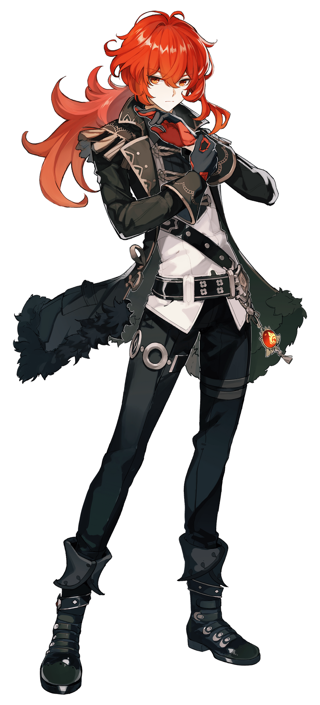

Eula Lawrence is a playable Cryo character in Genshin Impact.
Although a descendant of the infamous and tyrannical Lawrence Clan,
Eula severed her ties with the clan and became the captain of the Reconnaissance Company with the
Knights of Favonius. read more
Diluc History

Diluc Ragnvindr is a playable Pyro character in Genshin Impact.
Born into the affluent Ragnvindr Clan, Diluc is the current owner of the Dawn Winery and a nobleman of high esteem in Mondstadt.
While a past incident caused him to split ways with the
Knights of Favonius, he continues to protect Mondstadt in his own way.
read more